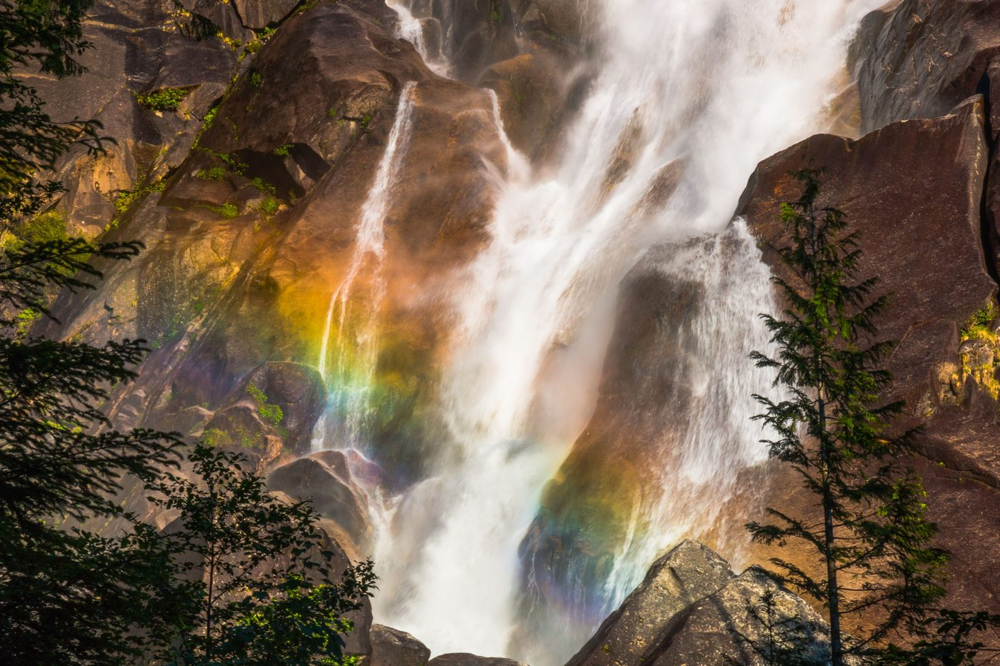
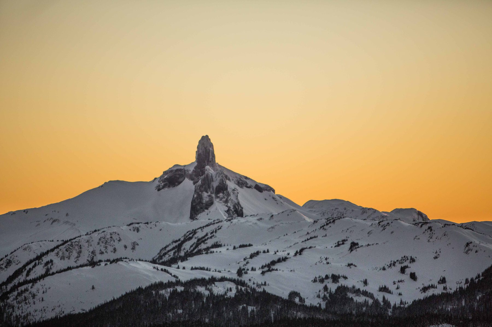

Why hike, then sauna?
A good hike gives you tired legs and a clear head. A good sauna takes care of both. In Squamish the two go together naturally: granite, forest and glacier-fed water on the outside, cedar, steam and a wood stove at the end of the day.

Easy: Shannon Falls
Shannon Falls is one of the easiest ways to feel like you're in the mountains: a short walk from the parking lot and a tall waterfall at the end, with mist, moss and big trees. It's perfect for a rest-day outing, family trips or an early afternoon walk before a sauna session.
Classic: the Stawamus Chief
The Chief is the hike most people think of. It's a steep, stair-heavy climb to the viewpoints over Howe Sound, and it takes a few hours depending on how far you go. Go early or late to avoid crowds and midday heat, bring a headlamp if you might be out near dark, and respect that the Chief is a sacred place for the Squamish Nation. A sauna session afterwards is the best recovery plan we know.
Big day: Black Tusk and Garibaldi
Black Tusk and Panorama Ridge in Garibaldi Provincial Park are long, full-day hikes, and not for the unprepared. If you're doing one, check conditions, start early, pack extra food and water, and plan something easy for the evening. A pre-booked sauna that's ready when you get back is a great motivator on the long descent.

Sauna after a hike: a few tips
- Hydrate first. Drink water and have a snack before your first round.
- Start gently. Keep your first round short, especially after a hot day.
- Stretch in the heat. Warm muscles are easier to stretch.
- Skip the plunge if you're wiped out. A cool rinse is enough.
- Wait on alcohol. Rehydrate before you reach for a beer.
For more on how heat helps tired muscles, see Sauna for Recovery After a Big Squamish Day and our first-timer's guide.
Plan the evening
Book your sauna for the day after your hike if you can, and have the stove going by the time you're home. Mamquam Sauna delivers a wood-fired barrel sauna with firewood and a cold plunge for a private 24-hour session. See mobile sauna rentals in Squamish.
Questions
What's the best hike in Squamish to follow with a sauna?
The Stawamus Chief is the classic: steep enough to earn it, short enough to finish in a few hours, and a sauna afterwards feels like a reward. For a gentler day, Shannon Falls is an easy walk.
Is a sauna good after a long hike?
Many hikers find the warmth relaxing after a long day on the trail. Rehydrate first, keep your first round short and skip it if you feel unwell or very depleted.
Can the sauna be set up near the trailhead?
We deliver wood-fired saunas around Squamish, Whistler and Pemberton, usually to private property or a rental. Ask about locations when you book.
More reading: Sauna for Recovery After a Big Squamish Day